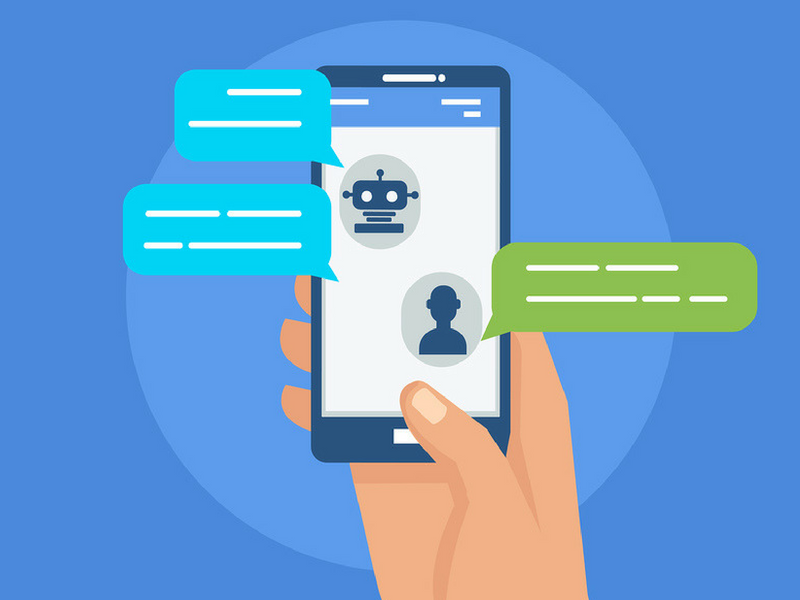

Messenger chat bots we setup are designed to response to your customers while your are not online. The responses we create imitate a conversation as if you are responding yourself. These are especially effective when running competitions as you can bring the customer through a funnel and at the end they get some kind of reward. Messenger chat bots are brand new and are already making a massive impact on businesses around the world.
